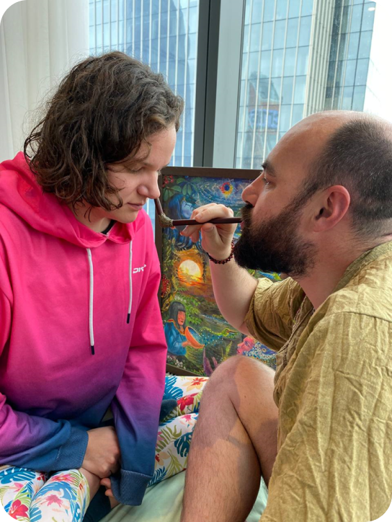
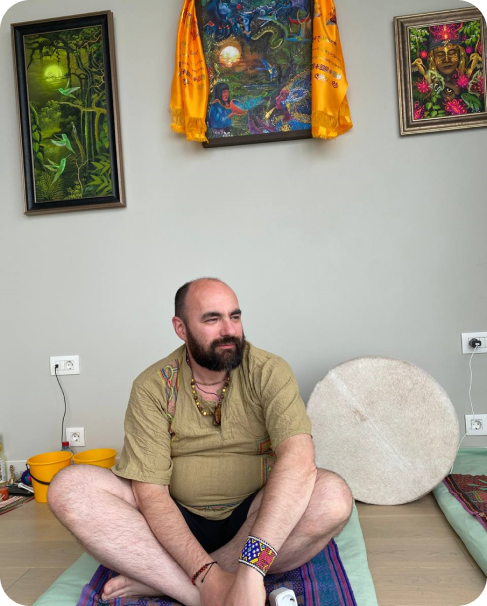
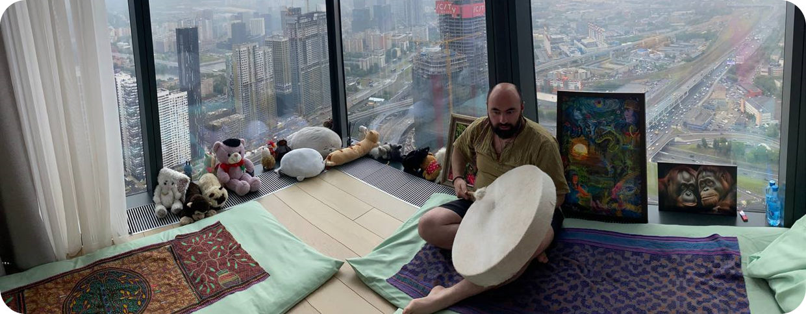
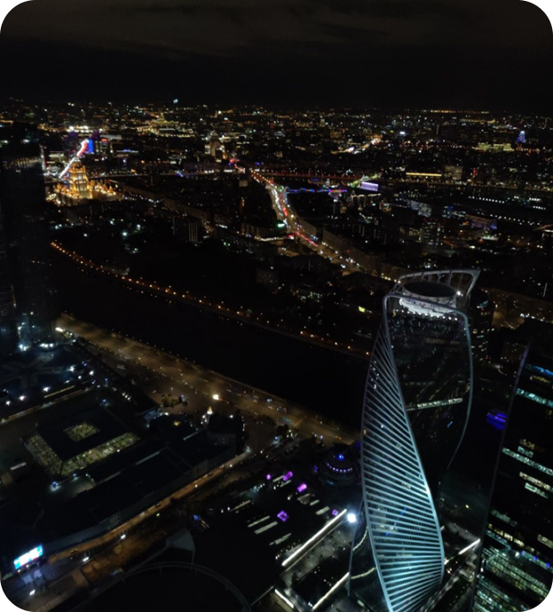

Ознакомься с ритуалом на 58 этаже Москвы-Сити и почувствуй единение ритмов города и
энергии трав, собранных шаманами амазонии
Церемония рапэ - это глубокий и трансформационный ритуал, который позволяет вам
соединиться с духовным миром и обрести гармонию и целостность.
Опытный и мастер проведет вас через этот путешествие, чтобы помочь вам обрести
внутреннюю силу, понимание и исцеление.
Очищение разума
Церемония рапэ позволяет освободить ум от негативных мыслей, стресса и тревоги.
Вдыхание рапэ глубоко очищает разум, освобождая его от старых узоров мышления и
позволяя проникнуть в глубинные слои сознания. Это помогает достичь ясности,
понимания и прозрения.
Гармонизация духа
Рапэ имеет способность создавать гармонию между физическим и духовным внутри нас.
Путем соединения с духовными реальностями и мудростью древних традиций, церемония
рапэ помогает нашему духу ощутить связь с более высокими силами и восстановить
естественное состояние равновесия и гармонии.
Исцеление тела
Рапэ содержит сильные целительные свойства. Вдыхание рапэ позволяет энергии
растений проникнуть в наши ткани и клетки, обновляя и разгружая физическое тело.
Церемония рапэ способствует расслаблению мышц, снятию напряжения и стресса, а
также активизирует самоисцелительные механизмы организма.

О мастере
Харчук Алексей провел более 500 церемоний рапэ за 5 лет.
Он совершил 10 поездок в Перу, где получил опыт работы с лучшими шаманами
В 2019 году семья племени Шипибо дала Алексею имя Санкын Быа и приняла к себе
Алексей имеет богатый опыт и познания в древних традициях рапэ.
Он поддерживается и тренируется Инной Сергеевой, практиком квантовой психологии с
25-летним стажем.
Харчук Алексей известен своим преданностью и приверженностью этому древнему и
целительному ритуалу.

Учителя Алексея
Сергеева Инна Александровна
Maestro Tabaco
Madre
Cesar Maynas Bardales (Перу)
Rider Arevalo (Перу)
Церемония рапэ проводится на 58 этаже делового центра Москва-Сити
Не упустите возможность познать глубинные преимущества церемонии рапэ на высоте
птичьего полета и открыть поток изобилия в своей жизни прямо в сердце города.

Сочетание позитивных энергий городской жизни с мощной духовной практикой рапэ
создает захватывающий опыт. Вы сможете почувствовать силу и баланс между ритмами
города и гармонией природной магии.
Эта уникальная возможность провести церемонию рапэ внутри города позволяет вам
активно интегрировать ценности и преимущества этого древнего ритуала в жизнь.
Ритуал становится неотъемлемой частью вашего повседневного опыта и поможет вам
осознать свою силу и потенциал даже в суете и напряжении городской жизни.
Кроме того, церемония рапэ на высоте птичьего полета может быть эффективным
инструментом для решения вопросов, связанных с финансами и бизнесом. Путешествие
внутрь себя в гармонии с позитивными энергиями города, поможет вам развить свое
благосостояние и привлечь успех.

Оставь заявку и обрети внутреннюю силу
Отзывы о нашей церемонии рапэ
Анна
Побывала на церемонии рапэ уже 3-ий раз. Каждый раз открывается сознание и
внутреннее состояние всё интереснее и интереснее. Рапэ мне моментально
помогло избавиться от насморка.
Чувствую себя отлично. Негативных мыслей вообще нет, избавилась от
панических и стресса, как будто всё перекрывает любовь.
Племянница подарила мне картину с моим тотемом, о котором она даже не знала.
Теперь висит в моей комнате и помогает вспомнить, кто я и как мне поступить
в какой-то ситуации.
Побывала на церемонии рапэ уже 3-ий раз. Каждый раз открывается сознание и
внутреннее состояние всё интереснее и интереснее. Рапэ мне моментально
помогло избавиться от насморка.
Чувствую себя отлично. Негативных мыслей вообще нет, избавилась от
панических и стресса, как будто всё перекрывает любовь.
Побывала на церемонии рапэ уже 3-ий раз. Каждый раз открывается сознание и
внутреннее состояние всё интереснее и интереснее. Рапэ мне моментально
помогло избавиться от насморка.
Побывала на церемонии рапэ уже 3-ий раз. Каждый раз открывается сознание и
внутреннее состояние всё интереснее и интереснее. Рапэ мне моментально
помогло избавиться от насморка.
Чувствую себя отлично. Негативных мыслей вообще нет, избавилась от
панических и стресса, как будто всё перекрывает любовь.
Племянница подарила мне картину с моим тотемом, о котором она даже не знала.
Теперь висит в моей комнате и помогает вспомнить, кто я и как мне поступить
в какой-то ситуации.
Побывала на церемонии рапэ уже 3-ий раз. Каждый раз открывается сознание и
внутреннее состояние всё интереснее и интереснее. Рапэ мне моментально
помогло избавиться от насморка.
Чувствую себя отлично. Негативных мыслей вообще нет, избавилась от
панических и стресса, как будто всё перекрывает любовь.
Племянница подарила мне картину с моим тотемом, о котором она даже не знала.
Теперь висит в моей комнате и помогает вспомнить, кто я и как мне поступить
в какой-то ситуации.
Побывала на церемонии рапэ уже 3-ий раз. Каждый раз открывается сознание и
внутреннее состояние всё интереснее и интереснее. Рапэ мне моментально
помогло избавиться от насморка.
Чувствую себя отлично. Негативных мыслей вообще нет, избавилась от
панических и стресса, как будто всё перекрывает любовь.
Побывала на церемонии рапэ уже 3-ий раз. Каждый раз открывается сознание и
внутреннее состояние всё интереснее и интереснее. Рапэ мне моментально
помогло избавиться от насморка.
Побывала на церемонии рапэ уже 3-ий раз. Каждый раз открывается сознание и
внутреннее состояние всё интереснее и интереснее. Рапэ мне моментально
помогло избавиться от насморка.
Чувствую себя отлично. Негативных мыслей вообще нет, избавилась от
панических и стресса, как будто всё перекрывает любовь.
Племянница подарила мне картину с моим тотемом, о котором она даже не знала.
Теперь висит в моей комнате и помогает вспомнить, кто я и как мне поступить
в какой-то ситуации.